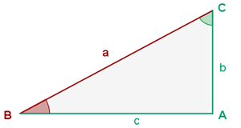
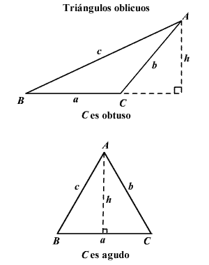

Consiste en determinar las dimensiones características de un triángulo (sus ángulos y las longitudes de sus
lados),
cuando algunos de estos datos son conocidos. El triángulo se encuentra en un plano o en una esfera.
Aplicaciones que requieren la resolución de triángulos incluyen la geodesia, la astronomía, la construcción
y la navegación.
Resolucion de triangulos
Un triángulo de forma general tiene seis características principales (véase el cuadro):
tres lineales (las longitudes de los lados a, b, c) y tres angulares (α, β, γ).
En los problemas clásicos de trigonometría en el plano se deben especificar tres de las seis características
y determinar
las otras tres. En este sentido, un triángulo puede ser determinado por completo únicamente en los
siguientes casos:
Tres de sus lados (LLL)
Dos lados y el ángulo incluido (LAL)
Dos lados y un ángulo no comprendido entre ellos (LLA), si la longitud del lado adyacente al ángulo es
menor
que la longitud del otro lado.
Un lado y los dos ángulos adyacentes a él (ALA)
Un lado, el ángulo opuesto a él y un ángulo adyacente (AAL)
Tres ángulos (AAA) sobre la esfera (pero no en el plano).
Para todos los casos en el plano, se debe especificar al menos la longitud de uno de los lados.
Si solo se dan los ángulos, no es posible determinar las longitudes de los lados,
ya que cualquier triángulo semejante es una solución del problema.
Ejemplo 1
Calcula el lado faltante del triángulo
De un triángulo rectángulo ABC, se conocen:
a = 415m y b = 280m
Resolver el triángulo.
Solucion
sen B = 280/415 = 0.6747 B = arc sen 0.6747 = 42° 25′
C = 90° - 42° 25′ = 47° 35′
c = a cos B c = 415 · 0.7381 = 306. 31 m
Ejercicio propuesto
Conociendo b y c, calcular a
De un triángulo rectángulo ABC, se conocen
b = 33 m y c = 21 m
Resolver el triángulo.
Opciones
La tangente de B es:
El angulo C es:
El lado a es:
Felicitaciones la respuestas son correctas!!
Respuesta incorrecta, por favor vuelve hacia atras y vuelve a intentarlo
Ejercicio propuesto2
De un triángulo rectángulo ABC, se conocen
a = 45m y B=22°
Resolver el triángulo.

Opciones
El angulo C es:
El lado b es:
El lado c es:
Felicitaciones la respuestas son correctas!!
Respuesta incorrecta, por favor vuelve hacia atras y vuelve a intentarlo
Ejercicio propuesto2
De un triángulo rectángulo ABC, se conocen
b=5.2m y B=37º
Resolver el triángulo.
Opciones
El angulo C es:
El lado a es:
El lado c es:
Felicitaciones la respuestas son correctas!!
Respuesta incorrecta, por favor vuelve hacia atras y vuelve a intentarlo
Ley de senos
La ley de los senos es la relación entre los lados y ángulos de triángulos no rectángulos (oblicuos).
Simplemente, establece que la relación de la longitud de un lado de un triángulo al seno del ángulo opuesto a ese
lado es igual para todos los lados y ángulos en un triángulo dado.

Para usar la ley de los senos necesita conocer ya sea dos ángulos y un lado del triángulo (AAL o ALA) o
dos lados y un ángulo opuesto de uno de ellos (LLA). Dese cuenta que para el primero de los dos casos usamos
las mismas partes que utilizó para probar la congruencia de triángulos en geometría pero en el segundo caso no
podríamos probar los triángulos congruentes dadas esas partes. Esto es porque las partes faltantes podrían ser
de diferentes tamaños. Esto es llamado el caso ambiguo y lo discutiremos más adelante.
Ejemplo
Dado ∆ABC con A = 30°, B = 20° y a = 45 m. Encuentre el ángulo y los lados faltantes.
El tercer ángulo del triángulo es
C = 180° – A – B = 180° – 30° – 20 ° = 130°
Por la ley de los senos,
Por las propiedades de las proporciones
Ejercicio propuesto
Conociendo b y c, calcular a
"1.- En el triángulo ABC, b = 15 cm, B = 42°, y C = 76°. Calcula la medida de los lados y ángulos restantes
Resolver
Opciones
La tangente de B es:
El lado a es:
El lado a es:
Felicitaciones la respuestas son correctas!!
Respuesta incorrecta, por favor vuelve hacia atras y vuelve a intentarlo
Ejercicio propuesto2
2.- En el triángulo ABC, b = 15 cm, B = 42°, y C = 76°. Calcula la medida de los lados y ángulos restantes
Resolver
Opciones
El angulo M es:
El angulo N:
El lado n es:
Felicitaciones la respuestas son correctas!!
Respuesta incorrecta, por favor vuelve hacia atras y vuelve a intentarlo
Ejercicio propuesto2
3.- En el triángulo ABC, a = 24 cm, B = 33°, y A = 108°. Calcula la medida de los lados y ángulos restantes
Resolver el triángulo.
Opciones
El lado b es:
El angulo C:
El lado c es:
Felicitaciones la respuestas son correctas!!
Respuesta incorrecta, por favor vuelve hacia atras y vuelve a intentarlo